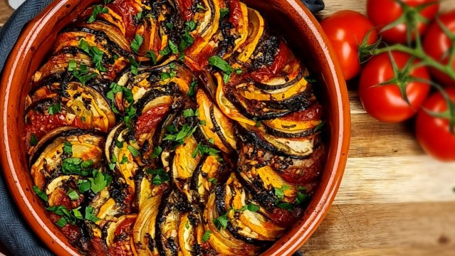

Ratatouille

Ingredientes
- 1 abobrinha
- 1 berinjela
- 6 tomates
- Sal e pimenta do reino a gosto
- Azeite
- 2 dentes de alho picados
- 1/2 cebola picada
- Alecrim
- Manjericão
Modo de Preparo
Molho
- Pique 4 tomates (remova a casca e as sementes).
- Refogue o alho e a cebola com azeite.
- Adicione o tomate picado e deixe refogar.
- Adicione sal, pimenta do reino, alecrim e manjericão e mexa bem.
- Retire do fogo e coloque em um processador (ou liquidificador) e bata até formar a consistência de um molho.
- Coloque o molho novamente na panela para ficar mais cremoso.
Prato
- Corte a abobrinha, a berinjela e os dois tomates restantes em rodelas finas.
- Coloque as rodelas de forma alternada no prato.
- Tempere com sal e pimenta do reino e também regue com azeite.
- Coloque no forno a 200°C por 40 minutos (verifique se os legumes já estão macios).
- Retire do forno e jogue o molho por cima. Sirva em um prato.
Voltar para a lista de receitas